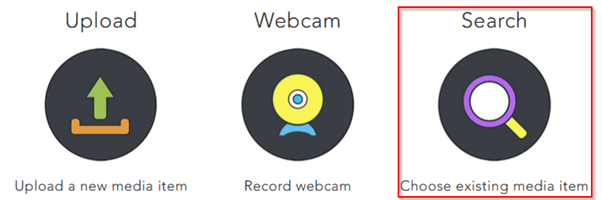
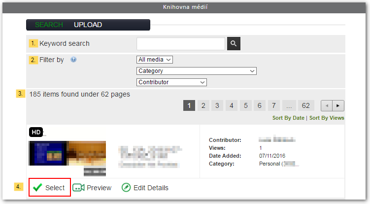
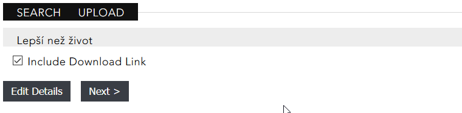
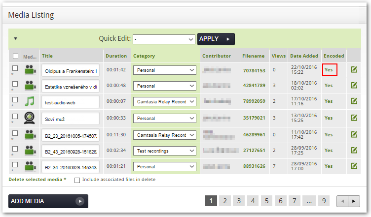
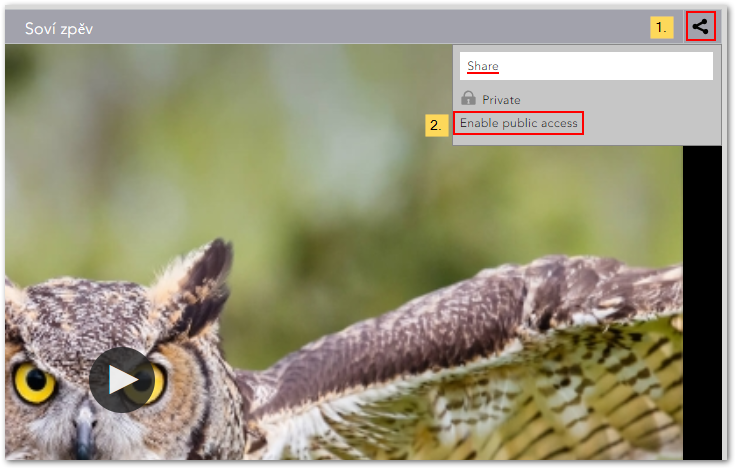
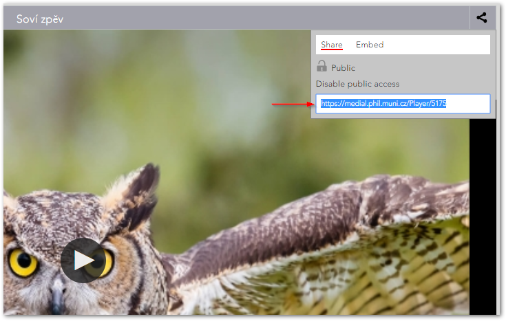
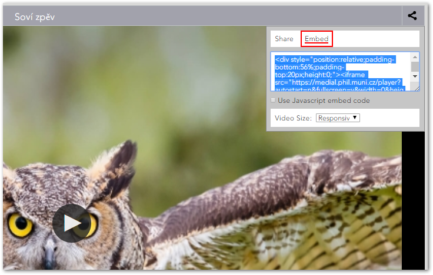
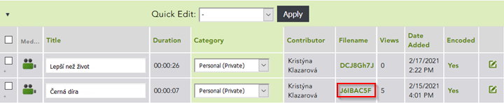

Sdílení obsahu¶
Obsah Medialu není vázaný jen na mediální knihovnu jako takovou. Nahrávky, ke kterým máte přístup – tedy nejen své vlastní, ale i další veřejné – můžete několika různými způsoby šířit i mimo Medial. Při tom je však třeba brát v potaz i další faktory, např. jste-li autorem nahrávky, při jaké příležitosti jste záznam pořídili atd.
Sdílení obsahu v Moodlu¶
Nahrávky z Medialu můžete snadno zveřejnit ve svých kurzech v Moodlu. Díky propojení obou systémů mohou vkládat obsah do Moodlu jak učitelé, tak studenti. Učitelé do Medialu vstupují pomocí tlačítka v HTML editoru, studenti pak při odevzdávání videa coby řešení úkolu. V obou případech se nejprve zobrazí nabídka tří možností pro nahrání audiovizuálních materiálů do Moodlu: první dvě možnosti (“Upload” a “Webcam”) umožňují nahrát do Medialu nový obsah a jsou popsány v této části dokumentace. Pokud chcete do Moodlu vložit nahrávku, která již je v Medialu umístěná, použijete tlačítko “Search”.

Odtud se pak jednoduše dostanete ke všem videím, ke kterým máte v Medialu přístup. Není tedy třeba nahrávky, které již v Medialu jsou, opětovně nahrávat. Video, které chcete vložit, můžete dohledat pomocí filtrů a vyhledávání.

V rozhraní pro výběr videa lze využít tyto prvky:
- Keyword search (vyhledávání) – umožňuje vyhledat zadaný řetězec v názvech a popiscích nahrávek, ve jménech autorů a tazích. Pro vyhledávání pomocí částečného řetězce je třeba použít zástupný symbol * (např. řetězec “středověk” vyhledá i videa se slovem středověký, středověku* apod. v názvu).
- Filter by (filtry) – můžete vybrat všechna média (All media), nebo moje média (My media), dále pak můžete filtrovat podle kategorií (nabídka Category) a autorů (nabídka Contributor).
- Nápis v levé části sekce ukazuje, kolik videí odpovídá Vámi nastaveným filtrům (v tomto případě jde o 185 videí na 62 stránkách). Pomocí číslovaných tlačítek můžete přecházet mezi jednotlivými stranami seznamu. Videa můžete seřadit podle data přidání (kliknutím na “Sort By Date”, jde o implicitní řazení) či počtu zhlédnutí (kliknutím na “Sort By Views”).
- Jakmile najdete Vámi požadované video, vyberte je kliknutím na tlačítko “Select”. Tlačítkem “Preview” si můžete zobrazit náhled videa, tlačítkem “Edit Details” pak u svých videí vstoupíte do rozhraní pro úpravu informací o nahrávce.
Pozor! Po zvolení konkrétního videa tlačítkem “Select” se zobrazí možnost “Include Download Link”, jejíž zaškrtnutí zpřístupní studentům možnost stahování videa. Pokud si nepřejete, aby studenti Vaše video mohli dále šířit (nahrávat na různé servery, YouTube apod.), nedoporučujeme tuto možnost zaškrtávat.

V posledním kroku Vás Medial informuje o tom, že Vaše video je připravené.

Další možnosti sdílení¶
Další možnosti sdílení se Vám nabízejí na stránce pro přehrávání videa. Dostanete se na ni po rozkliknutí nahrávky v knihovně videí nebo ze stránky My content. V druhém případě klikněte u daného videa na “Yes” ve sloupci Encoded (Stav zpracování, vizte obr. 5).

videa
Aby Vaše video mohl vidět někdo jiný než vy, musíte nejprve povolit veřejný přístup. V horním pravém rohu videa klikněte na ikonku sdílení (1.) a následně zvolte “Enable public acces” (2.).

Nastavení veřejného přístupu určuje, zda budou Vaše video moci zhlédnout i ostatní, neovlivňuje však jeho viditelnost v samotné knihovně médií. Pokud tedy u své nahrávky povolíte veřejný přístup a zároveň ji ponecháte v kategorii Personal, nebude se zobrazovat v knihovně videí Medialu ani ve výsledcích hledání, ovšem budou si ji moci zobrazit lidé, kterým poskytnete odkaz.
Pozor! Jen video, které není privátní, lze sdílet. Videa umístěná v jiných kategoriích, než je Personal, mají veřejný přístup automaticky povolený a nelze je skrýt. U videí v kategorii Personal můžete veřejný přístup dodatečně zrušit volbou “Disable public access”.
Poté máte možnost vybrané video sdílet dále různými způsoby:
- Odkaz – odkaz je nejjednodušší variantou. Můžete jej jednoduše zkopírovat a poslat dále např. emailem, vložit na stránky, dokonce i do Moodlu.

- Embedovací kód – Medial automaticky vygeneruje embedovací kód, díky kterému pak můžete vložit dané video na vlastní webové stránky. Stačí kliknout na “Embed” a kód se automaticky vygeneruje. V roletce “Video Size” si můžete vybrat velikost vloženého videa..

- Download – své video si můžete stáhnout do vlastního počítače – stačí kliknout levým tlačítkem myši na kód příslušného videa ve sloupci Filename a zvolit možnost “Uložit soubor” / “Save file”.

Platnost odkazu i embedovacího kódu lze zpětně zrušit tím, že zakážete veřejný přístup (volbou “Disable public acces”).
Poznámka. Kódy pro sdílení naleznete i u videí, která jsou ve veřejných kategoriích.
FAQ¶
Musím video zveřejnit, než jej vložím do kurzu v Moodlu?
Nemusíte. Vkládáte-li video do kurzu pomocí tlačítka Medial, účastníci kurzu náležící k Filozofické fakultě k němu v rámci Moodlu automaticky získají přístup. Mimo Moodle může video nadále zůstat nepřístupné.
Pokud u videa povolím veřejný přístup, bude se zobrazovat v knihovně videí?
Nikoliv, povolením veřejného přístupu pouze zapnete možnost video sdílet. Aby se zobrazovalo v knihovně videí, museli byste jej navíc přesunout do některé z veřejných kategorií. Pokud video ponecháte v kategorii Personal, ostatní jej v Medialu neuvidí.
Pokud u videa zruším veřejný přístup, dostanou se k němu nadále lidé s přímým odkazem?
Nikoliv, zrušením veřejného přístupu se zruší i platnost odkazů a embedovacího kódu. K vide se pak nedostanou ani lidé, kterým jste poskytli přímý odkaz.